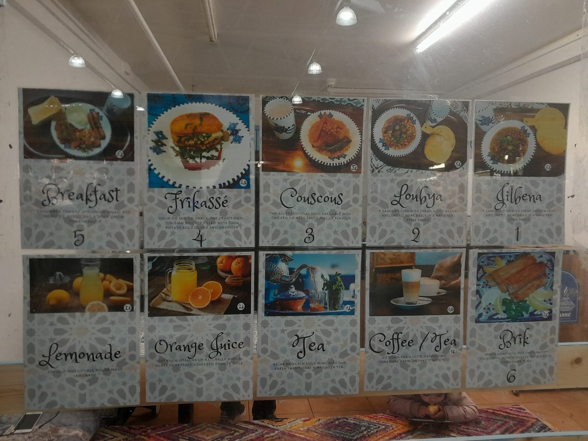
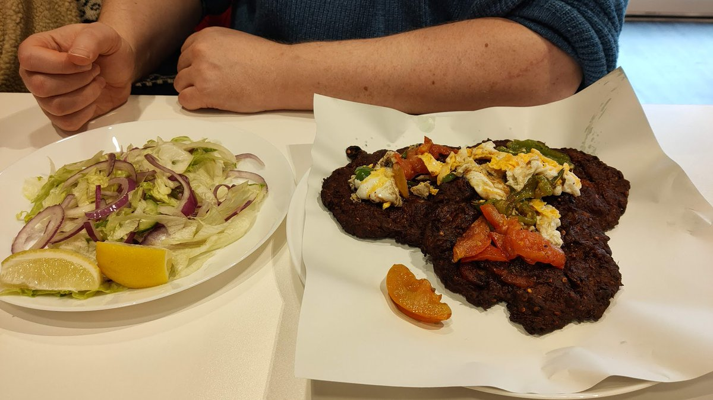
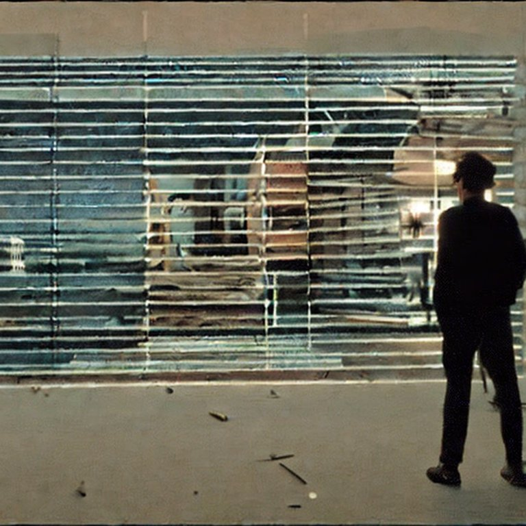
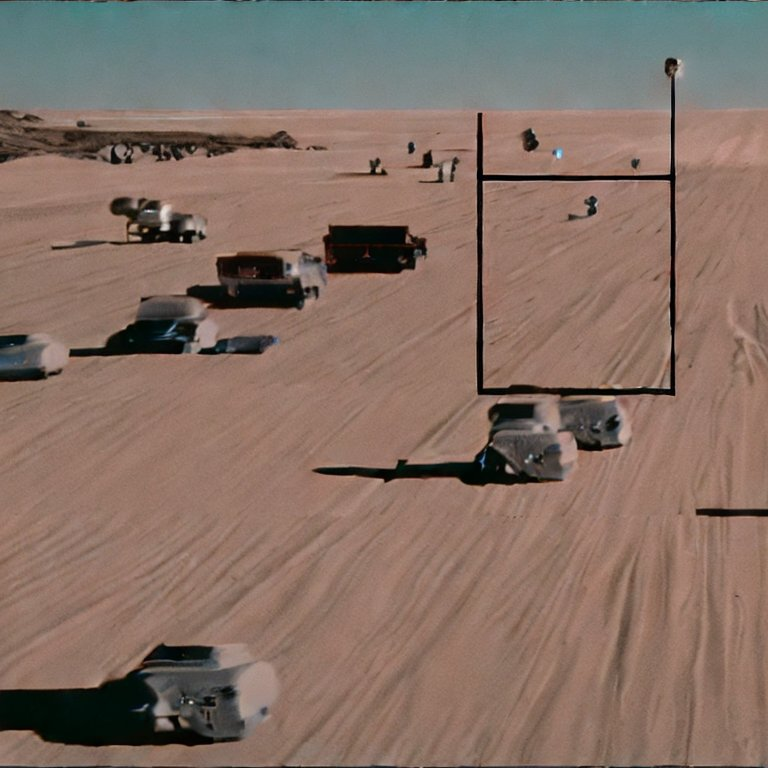

https://twitter.com/SebAaltonen/status/1625099933345800192 @SebAaltonen I see you are talking about a switch to Vulkan?
So the following phrase is the one I keep using regarding hardware support.
"Device must be as powerful as a Raspberry PI."
Few people will argue that a device once given away free on a magazine cover is too high a minimum spec.
Carrots are to be avoided, no weak stomach can digest them: turnips are innocent; and parsnips are nourishing. https://twitter.com/gutenberg_new/status/1624775414219673607
Going through steam demos and this is nice little tower defence factory game.
Need to move the loot from mobs into machines to build and the mobs take the shortest path.
More farming than fighting which explains why the window is titled mob farm :)
Beware, his mark! https://twitter.com/gutenberg_new/status/1624065743049437188
https://twitter.com/moonscript/status/1623452623524270082 @moonscript @itchio Does that trial make any of this less terrible?
I'm still kinda pissed that all the work I do with wasm became much less usable a couple of years back because of "security".
https://twitter.com/phubans/status/1623490050498625536 @phubans My response to the price of consoles/games in the mid 90s was to get a jamma arcade machine instead :)
I figured if I'm gonna pay a premium for hardware I might as well try that.
Slightly less new releases though.
I fully believe that any British child, should, by the age of 10, be fully capable of talking a load of old toot to the same level as Pete and Dud. https://twitter.com/JamesAHogg2/status/1621773047551168512
The longest cheat code that can be typed using just the letters on the top line of a typewriter is... writetyper. https://twitter.com/richardosman/status/1623275971036999681
Installed a bunch of steam next fest demos.
I don't actually have to play them too do I?
Also tonight is the #Bradford #GameDev meetup in a pub.
7-9pm upstairs at The Turls Green.

https://twitter.com/wetgenes/status/1623080257124196352 My site seems to have been banned by twitter so replace (dot) manually i guess.
This is your 24ish hour notice!
Tomorrow is the #Bradford #GameDev meetup in a pub.
7-9pm upstairs at the Turls Green.

https://twitter.com/LeedsGamesToast/status/1620713313440264192 @LeedsGamesToast @huddevfield @shindigdev Next Badonkadonk is on Wednesday 8th which is also during the Yorkshire games festival https://www.scienceandmediamuseum.org.uk/whats-on/yorkshire-games-festival @YorksGamesFest
A Badonkadonk is when you go for a Donk in BD.

https://twitter.com/tim_waters/status/1620451360083963904 @tim_waters Yup that was us, we tried the Frikasse and Brik with some mint Tea, ( so a sort of spicy tuna stuffed donut and cheesy spring roll. ) Found this menu photo before we went.

We've had 3 new food places open in central #Bradford the last week.
Caribbean "Kokobay" by Sunbridge Wells.
"Abaseens" Peshawari Chapli Kebab just up Manningham lane.
Tunisian "Frikasse" cafe at the back of Oastler market.
Have tried them all, AAAAA+++++ would eat again.

I Don't know why it only just occurred to me, but, of course if you do a two pass fbo blur using diagonals you get nice diamond artefacts instead of boring squares from axis alignment.
A 70s style Brain Drain you say?
https://www.youtube.com/watch?v=7YHrCAQ1Dlg&ab_channel=TheYesterdayMachine
https://twitter.com/CalinLeafshade/status/1615160849022259201 @CalinLeafshade Most programming is script kiddies trying to glue two libraries they do not understand together, so, mostly that.
Also fairly simple programming concepts, since I've forgotten exactly what the language I'm currently using expects.
The only correct and proper use of AI Art is to regenerate all the dream sequences in "Until the End of the World" so it is less of an 80s quantized video effect.
After that we can just turn it off.


This is your 90 minute warning (which is just enough time to watch a film or maybe half an Avatar) .
The #Bradford #GameDev #MeetUp in a pub is tonight at 7pm upstairs at The Turls Green.